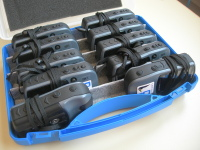
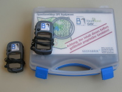

GPS-Verleih: Geräte
Wir haben zehn Garmin eTrex Legend HCx. Die Geräte haben einen GPS-Chip der neusten Generation, der auch in engen Straßen noch eine gute Positionsbestimmung bietet. Alle Geräte sind mit 2GB microSD-Karten ausgerüstet, auf denen die aktuellen OSM-Karten gespeichert werden können. So kann man unterwegs auf dem Farbdisplay direkt sehen, welche Daten schon erfasst wurden und wo noch etwas fehlt.
Zubehör
Zu den Geräten gibt es jeweils das folgende Zubehör:
- microSD-Karte
- Auf der 2GB microSD-Karte können OpenStreetMap-Karten und natürlich die gesammelten Tracks gespeichert werden. So geht einem nie der Speicher aus.
- USB-Kabel
- Für die Verbindung zum Rechner.
- Fahrradhalterung
- Zur Montage auf dem Fahrradlenker.
Akkus oder Batterien werden nicht mit verliehen. Die müßt Ihr selbst organisieren. Benötigt werden pro Gerät 2xMignon (AA) Akkus oder Batterien. Die Geräte brauchen nicht viel Strom, ein Akkusatz sollte etwa für einen Tag reichen.
Details zum Gerät
- Robustes und wasserdichtes Gehäuse
- 176x220 Pixel TFT-Display mit zuschaltbarer Hintergrundbeleuchtung
- Hochempfindlicher Empfänger und interne Antenne erlaubt auch Betrieb in schwierigem Gelände
- WAAS/EGNOS-fähig
- Stromversorgung über 2xMignon (AA) Batterien oder Akkus oder über USB
- Speichert auf der mitgelieferten microSD-Karte quasi unbegrenzt Trackpoints
- Speichert bis zu 500 Wegpunkte im internen Flash
- Kann OpenStreetMap-Karten anzeigen
Fotos
Die Geräte werden in einem stabilen Koffer verpackt geliefert:
 {kind=link}
{kind=link}
Links
- Tests von Garmin-GPS-Geräten im OSM-Wiki
- OSM-Karten auf Garmin-Geräten im OSM-Wiki
- eTrex auf www.garmin.de (Informationen vom Hersteller)